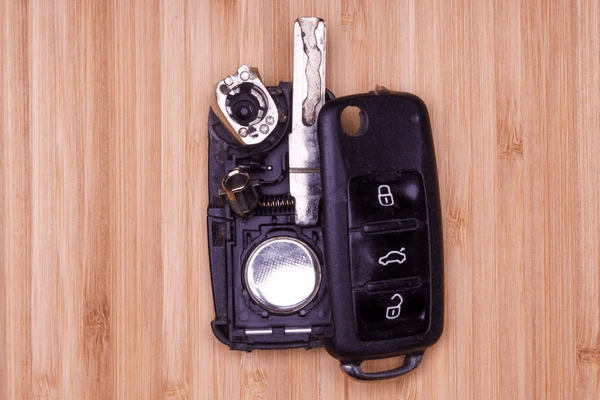

Як зберегти автомобільний ключ від пошкоджень — 7 порад

Новий чіп-ключ або smart-key коштує від 2000 до 9000 грн. При правильному догляді він прослужить вам 7-10 років. При недбалому користуванні — 1-2 роки. Ми як майстри бачимо щодня випадки коли ключ можна було б врятувати: вилили на нього каву, кинули в воду, поклали поруч з телефоном біля магніту. У цій статті — 12 порад, які реально подовжують життя ключа і заощадять вам тисячі гривень.
Виникла проблема з ключем?
Привозьте — діагностика безкоштовна, скажемо чи можна врятувати
1. Уникайте контакту ключа з водою
Волога — одна з основних причин поломки автомобільних ключів. Не залишайте ключ у місцях, де він може намокнути, та не носіть його разом із рідинами. Якщо ключ все ж потрапив у воду — одразу витягніть батарейку та зверніться до спеціаліста.
2. Уникайте екстремальної температури
Не залишайте ключ на торпеді під сонцем (плата всередині може деформуватися при +60-70°C). Не кладіть біля батареї опалення. Взимку не кидайте у багажник на ніч (-20°C різко скорочує життя батарейки).
3. Не кидайте ключ
Пластиковий корпус smart-key від падіння з 1.5 метра на бетон може тріснути одразу. Через 5-10 падінь — точно тріскається. Тріщина → потрапляє волога → ключ помирає. Якщо випадково кинули — оглядайте, заклеюйте тріщини скотчем до візиту до майстра.
4. Замінюйте батарейку завчасно
Не чекайте поки авто почне писати «Replace Key Battery». Сіла батарейка може протекти лугом і знищити плату. Якщо ключу 1.5-2 роки і дальність роботи зменшилася — міняйте батарейку, навіть якщо ще працює.
5. Не носіть на важкому брелку
Якщо у вас класичний чіп-ключ (з лезом), важкий брелок (з шкіри, металу) поступово розхитує штифти у замку запалювання. Через 2-3 роки замок починає «капризувати». Тримайте ключ авто на окремому кільці.
6. Тримайте подалі від магнітів
Сильний магніт (динамік телефону, магнітний тримач у машині, магнітна тримачка для ножів) може розмагнітити чіп. Випадки рідкі, але бувають. Smart-key чіп — стійкіший, традиційний — менш.
7. Зробіть дублікат ЗАЗДАЛЕГІДЬ
Один з найкращих способів заощадити — зробити дублікат коли все добре. Дублікат за оригіналом коштує у 2 рази дешевше за виготовлення без оригіналу. Тримайте другий ключ вдома, в офісі, у родича — якщо втратите перший, не доведеться платити подвійно.
Часті запитання
Що робити якщо ключ випав у воду?
Швидко витягніть, розберіть і дайте висохнути 24-48 годин на сухому місці (НЕ на батареї, НЕ феном). Витягніть батарейку.
Скільки служить smart-key?
При нормальному догляді — 7-10 років і більше. Найчастіше виходить з ладу через тріснутий корпус (через 3-5 років), сіла батарейка (1-2 роки) або потрапляння вологи.
Чи можна носити ключ авто на одному кільці з іншими ключами?
Краще ні. Інші ключі дряпають корпус, додаткова вага зношує замок запалювання (особливо для класичних чіп-ключів). Для smart-key — допустимо, але без важких брелків.
Як зрозуміти що ключ помирає?
Ознаки: зменшилася дальність роботи пульта, кнопки спрацьовують не з першого разу, корпус тріснутий, ключ погано вставляється у замок (для чіп-ключів). Якщо помітили — несіть на діагностику, ще можна врятувати.
Хочете щоб ключ прослужив довше?
Привозьте на профілактику — від 200 грн